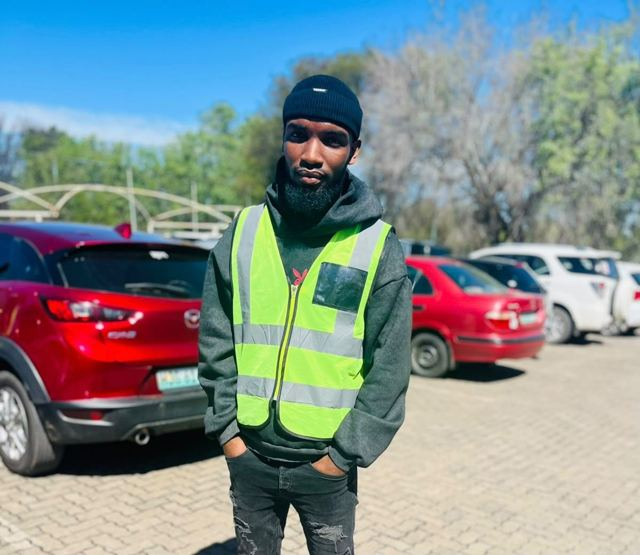

Programme Director
Leads curriculum design and partner relationships.
Bridging the digital skills gap for young people across Tshwane since 2021.
Tshwane Youth Tech Hub (TYTH) was established in 2021 by a group of IT professionals and educators who recognised the digital skills gap facing youth in the City of Tshwane. We run free coding bootcamps, digital literacy workshops and career readiness programmes for learners aged 16–25 from under-resourced communities, including Soshanguve, Atteridgeville and Mamelodi.
By 2025, TYTH had reached over 800 beneficiaries and partnered with three corporate sponsors. This website is the next step in building the credibility and reach we need to grow that impact further.
To empower Tshwane youth through accessible technology education, equipping them with the digital skills needed to participate meaningfully in the modern economy.
A Tshwane where every young person, regardless of socioeconomic background, has the digital skills to thrive in the fourth industrial revolution.
Leads curriculum design and partner relationships.

IT professionals who deliver our bootcamps and workshops.
Coordinates recruitment across Soshanguve, Atteridgeville and Mamelodi.
TYTH is proud to work with three corporate sponsors and community organisations who share our commitment to digital equity. Sponsors fund learner places and laptops; community partners provide our venues.
Become a partner Sponsor a learner